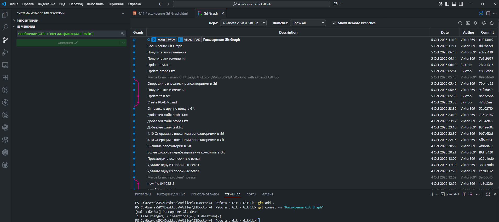

1
2
3
4
5
6
7
8
9
10
11
12
13
14
15
16
17
18
19
4.11 Расширение Git Graph
В этом уроке я расскажу вам про аналогичный способ выполнять команды Git используя при этом графический
интерфейс
редактора VS Code, специальную панель для работы с системой управления версиями, которая станет доступна
после установки
расширения Git Graph. С помощью графического интерфейса можно быстро и удобно применять все команды, которые
мы изучали
ранее не набирая их при этом в терминале в ручную.
Скачать Git Graph

Функции
Расширение отображает:
- локальные и удалённые ветви;
- историю коммитов с информацией об авторе и дате;
- теги и другие ссылки;
- незафиксированные изменения
- незафиксированные изменения (можно отключить для больших репозиториев).
Некоторые возможности:
- Выполнение действий Git непосредственно из интерфейса через контекстные меню. Например,
создание новой
ветки,
переключение на другую ветку.
- Просмотр деталей коммита и изменений файла (можно открыть текущую версию файла,
скопировать путь к файлу).
- Сравнение коммитов — можно кликнуть на один коммит, а затем на другой (с помощью
горячих клавиш).
- Ревью кода — можно запустить ревью на любом коммите или между двумя коммитами,
отслеживать, какие файлы были проверены
(выделены жирным шрифтом).
Установка
Рекомендуемый метод: через Visual Studio Code Marketplace. Нужно открыть представление
«Расширения» (Extensions), ввести «Git Graph» и нажать «Установить».
Требования: минимальная версия Visual Studio Code — 1.38.0 или выше, любая поддерживаемая
версия Git. Расширение совместимо с Windows, macOS и Linux.
Настройка
Расширение можно настроить через настройки VS Code. Некоторые параметры:
- Стиль графика — можно выбрать между «округлым» и «ангулярным» стилем линий.
- Цвета графика — можно настроить цвета для ветвей.
- Формат даты — несколько форматов, включая относительные даты.
- Видимость столбцов — можно показать или скрыть столбцы даты, автора и коммита.
Отзывы
Пользователи отмечают, что расширение полезно для визуализации истории репозитория и
понимания отношений между ветвями,коммитами и слияниями. Однако есть и проблемы, например, с отображением
ветвей в одной строке (например, из-за быстрого
слияния).